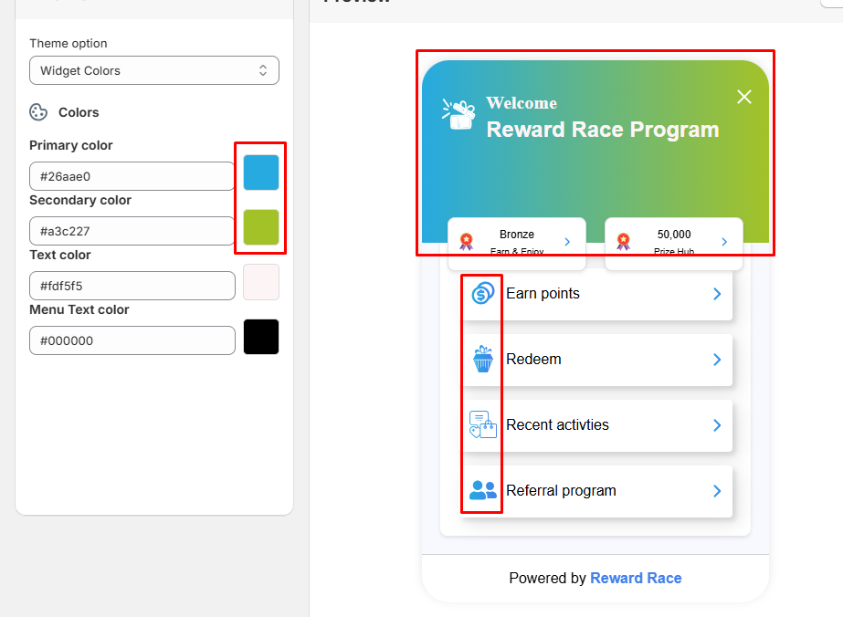

1. Reward race overview
Thank you for choosing the Reward Race loyalty program! With our program, you can offer your customers exciting ways to earn points and keep them engaged with your store.
The Reward Race program is a fun and engaging loyalty system designed to help merchants reward customers for their actions. It encourages customers to interact with your business, earn points, and compete for exciting rewards.
1.1. What is the reward race program ?
The Reward Race program is a fun and engaging loyalty system designed to help merchants reward customers for their actions. It encourages customers to interact with your business, earn points, and compete for exciting rewards.
1.2. What makes us unique
Our system offers four key features— Reward Program, VIP Program, Referral Program, and Survey Program— designed to help merchants easily reward their customers and boost engagement. Here's how each feature works and how you can use them to award points:
- 1. Reward Program: Encourage everyday customer actions like purchases or social media interactions.
- Example: A customer spends $50 at your store and earns 500 points, which they can later use to get a 10% discount.
- 1. VIP Program: Reward your most loyal customers with exclusive benefits. Set different VIP tiers (e.g., Silver, Gold, Platinum) based on customer spending or points earned. Offer extra rewards, such as bonus points, early access to sales, or special gifts for higher tiers.
- Example: A customer who earns 1,000 points in a month qualifies for the Gold tier and receives double points on all purchases for the next month.
- 1. Referral Program: Grow your customer base through word-of-mouth marketing. Provide customers with a unique referral code or link. When someone uses their code to make a purchase, both the referrer and the new customer earn points.
- Example: A customer refers a friend who spends $30. The customer earns 300 points, and the friend gets a welcome bonus of 100 points.
- 1. Survey Program: Collect valuable feedback while rewarding customers for their input. Create surveys about your products or services. Offer points to customers who complete the surveys, encouraging participation.
- Example: A customer fills out a feedback form about their shopping experience and earns 50 points.
1.3 Additional Tools and Settings
Our platform offers powerful tools and settings to help merchants manage and optimize their loyalty programs seamlessly. Take full control of your loyalty program with these essential tools and customizable settings:
- 1. Points Expiry Rules: Set time limits for points to expire, encouraging customers to redeem them before they’re gone. Keep your program active and engaging!
- 2. Activity Tracking: Monitor all customer actions in real-time—purchases, referrals, and more. Stay updated on every interaction within your program.
- 3. Analytics: Access in-depth reports to track program performance, customer behavior, and ROI. Make data-driven decisions with ease.
- 4. Branding options: Customize your loyalty program to match your brand—logos, colors, and themes. Create a seamless, branded experience for your customers.
- 5. Customer Data: Easily view and manage customer profiles, point balances, and activity history. Strengthen your relationships with personalized rewards.
- 6. Import/Export Tools: Quickly import existing customer data or export reports for offline analysis. Keep your workflow efficient and organized.
- 7. Onsite Content: Engage your customers with banners, pop-ups, and widgets directly on your website. Promote your loyalty program effortlessly.
- 8. Automated Email Notifications: Keep customers informed with automatic updates about points, rewards, and exclusive offers, driving continued engagement.
- 9. Language Settings: Cater to your audience with multi-language support, ensuring a seamless experience for customers in their preferred language.
- 10. Billing Management: Easily manage your subscription plan, invoices, and payment details from a single dashboard, ensuring smooth operations.
3. Referral Program
The Referral Program allows you to grow your business by encouraging customers to refer friends and family. Follow these simple steps to get started:
- Navigate to Reward-Race Loyalty > Referral Program.
- Explore the available tools and guidelines for setting up your referral process.
3.1. Generate Referral Link
Create Link
Click on the "Create Referral Link" button to access the referral.

After clicking this button, you will see the referral setup flow:
Referral Name
Set a unique and descriptive name for each referral program. For example, "Holiday Sale Referral" or "VIP Customer Referral." This helps you track and manage referral programs effectively.
Referral Points Setup
Click on the "Setup Referral" button to configure referral points.
Reward Type
Choose the reward type for the referrer. We offer two types of rewards:
- 1. Points: If you select points, you can set the amount for the referrer. By default, points are pre-configured during onboarding, but you can update or customize them here.
-
2. Reward: If you select rewards, configure the reward for the
referrer. Ensure your reward program is activated; otherwise, this option will not
be available.

Referral Text Preview
Craft an attractive referral title and description for your customers. A compelling message inspires customers to refer their friends.
Once done, click the button to set the referral reward for the referred friend.

You will find similar options as for the referrer, with identical settings available for customization.

Referral Redirection URL
Choose where referred customers should be redirected. We offer two options:
- 1. Product: Redirect customers to a specific product page. By default, all referred customers are sent to your homepage.
- 2. Customer: Redirect customers to the login page. This option helps increase customer acquisition.
Additional Information
- All settings can be reviewed in the summary section.
- Once you’ve completed the setup, click the "Create" button to
finalize the referral program.

3.2. Referral Steps
Activate Referral Program
To begin, activate your referral program. Click the "Turn On" button to enable the program.
Referral Reward List
Here, you can view all your created referral programs. You can add new referral programs, edit existing ones, or assign specific referral links. Use the "Assign Referral Link" option to assign links to specific customers or VIP tier customers.

Assign Referral Link
Assign referral links to specific customers or customer tiers. You have two options:
-
VIP Tier Customers: Select this option to assign referral links to
customers in specific tiers. Click the tier input field to view all your created
tiers, then select the desired tier.
Note: If no tiers have been created, selected option will not be available.
-
Individual Customers: Select this option to assign referral links
to individual customers. Use the customer input field to find your store's customer
list and select the desired customer.
Note: If no customers are available, You cant see any customer here.

After selecting the customer type, click "Next". Choose the desired referral link from your created list, then click the "Assign" button to complete the setup.
Referral Branding
Customize the branding of your referral popup to align with your store’s identity. Set colors, text, and icons, and control the popup’s visibility using the switch button. To edit the referral popup, click the "Edit" button on the referral popup page.
-
Popup Content Settings: Customize the referral title and
description text to create a compelling message for your referring friend.

-
Popup Branding Settings: Personalize the popup background color,
text color, and icon to match your store's branding.

4. VIP Program
The VIP Program is an excellent way to enhance customer loyalty and grow your business by rewarding your most valued customers. Follow these simple steps to set up and manage your VIP Program:
Getting Started
- Go to Reward-Race Loyalty > VIP Program.
- Review the guidelines and tools provided for setting up your VIP process.
4.1. VIP Tier Steps
Create VIP Tier
To create your VIP tiers, click on the "Create VIP Tiers" button.
Once you click this button, the VIP setup flow will guide you through the process:
Tier Entry Conditions
-
Determine Entry Criteria: Choose how customers will qualify for VIP
tiers. Options include:
- Lifetime Points Earned: Base entry on the total points customers accumulate.
- Lifetime Money Spent: Base entry on the total amount customers spend.
- Set Tier Count: Specify how many tiers you want to create. You can create up to 5 tiers. Setting the number of tiers is required to proceed to the next step.
After configuring these options, click the "Next" button to continue.
Tier Configuration
In this step, you will configure the details of each tier:
- Assign Tier Names: Use unique and descriptive names for each tier to easily differentiate them.
-
Set Minimum Points: Define the minimum requirement for customers to
qualify for each tier.
Note: Based on the entry condition you selected:
- If you chose Points Earned, specify the required points amount here.
- If you chose Amount Spent, set the required spending amount here.
-
Reward Percentage: Set the percentage reward that customers will
receive when they reach a specific tier or move to the next tier.

-
Select Tier Rewards: Choose one or more rewards for each tier. You
can select or deselect rewards as needed.
Note: Before selecting rewards, ensure they are activated under Reward Program > Ways to Earn Points. If rewards are deactivated, they will not appear as options.
-
Choose an Icon: Select a default icon or upload a custom icon to
visually represent each tier.

Additional Information
- Review all settings in the summary section to ensure accuracy.
- Once satisfied, click the "Create" button to finalize your VIP Program.
4.2. VIP Tier Settings
Activate VIP Program
To begin using the VIP Program, you need to activate it. Click the "Turn On" button to enable the program and make it operational for your customers.
VIP Tier List
This section displays all your created VIP Tiers. From here, you can:
- Edit: Modify the settings of an existing tier.
- Delete: Remove a tier from the list.
- Create New Tier: Add additional tiers to your program as needed.
VIP Tier Settings
In this section, you can manage important settings for your VIP tiers, including program start dates and tier expiration policies:
- Date Management: Set the program’s start date to determine when your VIP program begins.
- Tier Progress Expiration: Define an expiration date for tier progress. This ensures customers have a clear timeline for maintaining or advancing their VIP status.
5. Survey
The Survey feature allows you to gather valuable customer feedback through customizable surveys. Follow these steps to create, manage, and analyze your surveys:
Getting Started
- Navigate to Reward-Race Loyalty > Survey.
- Explore the tools and options available for setting up surveys.
5.1. Survey Steps
Activate Survey Status
To start using surveys, activate the feature by clicking the "Turn On" button.
Create Survey
To create a new survey, follow these steps:
- Click on the "Create Survey" button.
- Your created survey list will be show here.
- You can see all of your survey list with View all .
The "Create Survey" feature helps you quickly design and deploy a survey to gather customer feedback. Follow these steps to get started:
Step 1: What Will Your Survey Say?
- Slide Template: Choose how to build your survey slides:
- Build Manually: Create each slide from scratch with full customization.
- Start with a Template: Use a pre-made template to save time. (Upcoming Feature)
Step 2: Where Will Your Survey Show Up?
- Display Rules: Select where the survey will be displayed on your
website:
- Web: Display the survey on specific web pages or conditions.
- Every Page: Display the survey on all pages of your website (Upcoming Feature)
Step 3: Select a Display Template
- Display Template: Choose from available templates to determine how
the survey will appear to users. Currently, the only available option is:
- Product Page (Logged-in Customers): Display the survey on product pages for logged-in users.
Note: Additional page options are not available yet but will be introduced as an upcoming feature.
Step 4: What Should Your Survey Be Named?
- Survey Title: Enter a descriptive name for your survey to easily identify it later.
Final Step: Create Your Survey
- Once all fields are filled out, click the "Create Survey" button to save and start configuring your survey.
Create Slide
Within each survey, you can create multiple slides to gather specific information. Each slide has various settings and options to tailor the survey experience. Here's a breakdown of the features:
- Click the "Create Slide" button.
Step 1: Select Survey
- Displays a dropdown of all the surveys you have created.
- Select the survey where this slide will be added.
Example: If you have a survey named "Customer Feedback Survey" select it from the dropdown to associate the slide with that survey.
Step 2: Format
Choose the format of the slide based on the type of question you want to ask. Available options include:
- Single Choice: Users can select one option.
- Multi Choice: Users can select multiple options.
- Binary: Yes/No or True/False type of question.
- Email Capture: Collect email addresses.
- Satisfaction Scale: Measure user satisfaction using emojis or scales.
- Star Rating: Rate something on a scale of stars (e.g., 1–5 stars).
- Short Answer: Open-ended question for users to type responses.
Example: If you want users to rate your product, select Star Rating.
Step 3: Content
Add the main content of the slide:
- Main Heading: The title of the slide.
- Subheading (Optional): Additional details or instructions for the question.
Example: Main Heading: "How would you rate our service?"
Step 4: Options
Displays information if you want to show:
- Left Label (Optional): Displays information on the left side, such as a description or rating category.
- Right Label (Optional): Displays information on the right side, such as a description or rating category.
Example:For a star rating widget, you can set the left label as "Bad" and the right label as "Good". This helps users understand the rating scale.
Step 5: Logic
Use logic to configure special behaviors based on the user's responses.
- Example Logic 1: If the user select "1/2 Stars" redirect them to a feedback slide to provide more details.
- Example Logic 2: If the user selects "5 Stars" then survey will be end.
Step 6: Settings
- Show Heading: Display or hide the slide title.
- Hidden: Hide the slide within the survey if necessary (e.g., for internal purposes or conditional display based on logic).
Final Step: Create Your Slide
- Once all fields are filled out, click the "Create Slide" button to save.
Slide Preview
- On the right side, you can see a live preview of the slide based on the settings you configure.
- This helps you visualize how the slide will look to users.
5.2. Survey Report
View your survey performance and insights by clicking the "See survey reports" button.
On the report page, you will find several options to customize your view:
-
Date Range: Use this option to select your preferred date range.
You can choose:
- A specific date
- A longer range (e.g., January to March)
- Quick options like "Yesterday" or "Last 7 Days"
- Survey Responses: This section allows you to select and review reports for specific surveys you have created. Choose the desired survey to analyze its performance.
- After configuring your settings, click the "Generate Report" button to view the results. The generated report will display all relevant insights and metrics.
Specific Survey Report
View detailed reports for each individual survey to gain specific insights.
From the survey list, you can access a survey report by clicking on the corresponding icon:
- View the total number of customer responses for the selected survey.
- Access a detailed breakdown of the specific survey's performance and insights.
Specific Slide Report
Access individual reports for every slide within a survey to analyze detailed responses.
From the slide list, you can view the report for a specific slide by clicking on the respective icon:
- Access a detailed overview of the selected slide's report.
- View the total number of customer responses for the selected slide.
- Navigate to the next slide's report using the "Next" button.
- Go back to the previous slide's report using the "Back" button.
5.3. Widget Settings
Customize the appearance and behavior of your survey widget by clicking on the "Customized" button.
- Border Colors: Set the widget's border colors to match your brand's style.
- Button Background Colors: Adjust the widget's button background colors for better visibility.
- Button Text Colors: Customize the text colors of buttons for improved readability.
- Text Direction: Adjust the text direction to suit your audience's language preferences. Options include left-to-right (LTR) or right-to-left (RTL).
- Border Radius and Thickness: Modify the widget's border radius and thickness to achieve a sleek design.
- Preview the changes and click "Save" to apply your customizations.
6. Customer
Getting Started
- Navigate to Reward-Race Loyalty > Customers.
- Explore the tools and options available for setting up surveys.
7. Analytics
Getting Started
- Navigate to Reward-Race Loyalty > Analytics.
- Explore the tools and options available for setting up surveys.
8. Settings
Getting Started
- Navigate to Reward-Race Loyalty > Settings.
8.3. Branding Customization
Make your loyalty widget match your store's branding by adjusting colors, text, icons, visibility, and button positioning.
To start customizing, go to Reward-Race Loyalty > Settings > Branding.

Widget Customization
On the left side, you can adjust all settings, while on the right side, you’ll see a live preview of your changes.

Theme Customization
Customize the look and feel of your widget with the following options:
- Widget Colors:
- Primary and Secondary Color: Adjust the gradient colors that will appear in the background, icons, and button background to create a more attractive widget for your store. 
- Text Color: Change the header text color to align with your
branding.

- Menu Text Color: Change the color of the menu text to match your store’s theme.
- Widget Visibility: Control when the widget is visible. You can hide or show the widget on mobile devices within your store.
- Widget Icon:
- Choose Button Icon: Select an existing icon or upload your
own to appear on the widget header and button.


- Choose Reward Menu Icon: Upload or select an icon to represent the rewards menu.
- Choose Earn Menu Icon: Upload or choose an icon to
represent the earn menu.

- Choose Redeem Menu Icon: Upload or choose an icon to
represent the redeem menu.

- Choose Activity Menu Icon: Upload or choose an icon to represent the activity menu.
- Choose Referral Menu Icon: Upload or choose an icon to
represent the referral menu.

- Choose Button Icon: Select an existing icon or upload your
own to appear on the widget header and button.
- Widget Text: Customize various text elements in the widget:
- Header Text:
- Greeting Text: Modify the greeting message
displayed at the top of the widget.

- Program Name: Change the program name shown on the widget.
- Greeting Text: Modify the greeting message
displayed at the top of the widget.
- Button Text:
- Reward Button Text: Customize the text for the
reward button.

- Earn Button Text: Edit the text for the earn
button.

- Redeem Button Text: Edit the text for the redeem button.
- Recent Activities Button Text: Modify the text for the recent activities button.
- Referral Button Text: Change the text for the
referral button.

- Reward Button Text: Customize the text for the
reward button.
- Header Text:
- Widget Button: Customize the appearance of your widget’s button:
- Button Text: Adjust the text on the button to reflect your
branding.

- Button Type:
- Icon and Text: Display both icon and text on the button.
- Icon Only: Display only the icon.

- Text Only: Display only the text.
- Button Position:
- Top Left: Place the button in the top-left corner of your screen.
- Top Right: Place the button in the top-right corner of your screen.
- Bottom Left: Place the button in the bottom-left corner of your screen.
- Bottom Right: Place the button in the bottom-right
corner of your screen.

- Button Spacing:
- Side Spacing: Adjust the horizontal space from the
left or right edges of the screen (e.g., 10px or 20px).

- Bottom Spacing: Adjust the vertical space from the
top or bottom edges of the screen (e.g., 10px or 20px).

- Side Spacing: Adjust the horizontal space from the
left or right edges of the screen (e.g., 10px or 20px).
- Button Text: Adjust the text on the button to reflect your
branding.
8.4. On-site content
Make your loyalty widget match your store's branding by adjusting colors, text, icons, visibility, and button positioning.
8.5. Customer emails
Go to Reward-Race Loyalty > Settings > Customer Email.
There are three types of notification emails available to keep your customers engaged and informed:

- Points Emails: These emails notify customers about actions related
to their points. All email can control their enable/disable with switch button. The following email types are included:
- Sign-up Email: Sent after a customer signs up for Reward Race.
- Birthday Email: Sent on the customer’s birthday.
- Purchase Email: Sent after a customer makes a purchase from your store.
- Social Share Email: Sent after the customer shares your store on a social platform.
- Redeem Email: Sent after the customer redeems their points in Reward Race.
- Referral Emails: These emails notify customers about referral
actions:

- Friend Received Referral Email: Sent when a friend receives a referral from the customer.
- Referral Completed Email: Sent when a referral is successfully completed.
- Other Emails: These are additional notifications:

- Reward Expiry Email: Sent to notify customers about the expiration of their points.
Set up and customize emails to keep your customers informed about their rewards. This section allows you to configure email templates, subjects, and content for various customer actions.
Steps to Customize Emails:
- Select the Email Type:
Choose the specific email you want to configure, such as "Birthday Reward."
- Enable or Disable Emails:
Toggle the email status between Enabled and Disabled to activate or deactivate this email notification.

- Emails Sent: Displays the total number of emails that have been sent to customers.

- Configure Email Content:
Fill in the following fields to personalize the email:
- Tags: Use dynamic tags like
{{first_name}},{{earned_point}}, or{{reward_name}}to personalize your email content. Once you select a tag, you can copy it and paste it into the email body to enhance customer engagement.
- Email Subject: Enter a catchy subject line, such as: "You’ve just earned {{point_amount}} {{point_name}}!"
- Title: Provide a title for the email. Example: "You’ve just earned points!"
- Email Body: Write the main content of the email. Example:
Congratulations {{first_name}}, you’ve just earned {{earned_point}} from the action {{reward_name}}.
- Tags: Use dynamic tags like
- Preview the Email:
On the right side of the screen, view a live preview of the email with your configured content and tags.
- Send Test Email:
Click the Send Test Email button to test how the email looks before enabling it for your customers.
- Save Changes:
Once satisfied, click Save to finalize your email settings.
Dynamic Tags Available:
These tags automatically pull customer-specific information into the email:
{{first_name}}: The customer’s first name.{{last_name}}: The customer’s last name.{{reward_name}}: The name of the reward activity (e.g., "Referral Bonus").{{shop_name}}: The name of the shop name (e.g., "Reward bloom").{{earned_point}}: Total earned points.
Email Design Tips:
- Use concise and engaging subject lines to grab attention.
- Keep the email body clear and personalized with dynamic tags.
- Use a consistent tone that matches your brand’s voice.
Example Email Template:
Here’s an example of how the email might look:
Email Subject: "You’ve just earned {{earned_point}} points!"
Title: "Congratulations on your reward!"
Body: "Hi {{first_name}}, you’ve just earned {{earned_point}} points for completing the action: {{reward_name}}. Keep earning more rewards!"